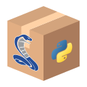

Cas d’usage, principales fonctionnalités et points forts#
DataLab est une plateforme de traitement et de visualisation de données (signaux ou images) qui intègre de nombreuses fonctions. Développé en Python, il bénéficie de la richesse de l’écosystème associé en termes de bibliothèques scientifiques et techniques.
Quelles sont les applications de DataLab ?#
Exemples concrets#
Quelques exemples concrets et spécifiques illustrent la nature des travaux pouvant être réalisés avec DataLab :
Traitement de données expérimentales (signaux et images) acquises sur une installation scientifique dans le domaine nucléaire
Traitement de données acquises par un capteur dans un contexte industriel
Traitement d’images acquises par une caméra dans un contexte médical
Détection automatique de défauts sur une surface, dans le contexte du contrôle qualité
Détection automatique des positions des tâches laser dans une scène, dans le contexte de l’alignement laser
Alignement d’instrument par traitement d’image
Détection automatique de motifs et corrections géométriques d’images, dans le contexte du contrôle non destructif
Modes d’utilisation#
Selon l’application, DataLab peut être utilisé selon trois modes différents :
 Mode autonome : DataLab est une application de traitement à part entière qui peut être adaptée aux besoins du client par l’ajout de plugins spécifiques à son métier.
Mode autonome : DataLab est une application de traitement à part entière qui peut être adaptée aux besoins du client par l’ajout de plugins spécifiques à son métier.
Mode embarqué : DataLab est intégré dans votre application pour apporter les fonctionnalités de traitement et de visualisation nécessaires.Mode commandé à distance : DataLab communique avec votre application, lui permettant de bénéficier de ses fonctionnalités sans perturber l’expérience utilisateur.
Cas d’usage#
Voir aussi
Pour des exemples pratiques de cas d’usage, voir la section Tutoriels :
La plupart des tutoriels décrivent des exemples concrets d’utilisation de DataLab dans un contexte scientifique ou technique.
Concernant l’utilisation de DataLab avec un IDE (Integrated Development Environment) tel que Visual Studio Code ou Spyder, voir le tutoriel DataLab et Spyder : un duo gagnant.
Quant à l’utilisation de DataLab avec des notebooks Jupyter, c’est l’un des sujets abordés dans le tutoriel Ajouter vos propres fonctionnalités.
DataLab est un outil polyvalent qui peut être utilisé dans différents contextes :
- Traitement de données
DataLab est un outil puissant pour le traitement de signaux et d’images. Il peut être utilisé pour développer des algorithmes complexes, ou pour prototyper rapidement une chaîne de traitement.
Voir nos Tutoriels pour des exemples pratiques d’utilisation dans le traitement de données.
- Outil de soutien aux travaux scientifiques/techniques
DataLab peut être utilisé comme un outil de soutien aux travaux scientifiques/techniques. Il vous permet de visualiser et de traiter des données, et de partager vos résultats avec vos collègues. Il peut facilement être adapté à vos besoins par l’ajout de plugins, et peut même être utilisé avec vos outils quotidiens (par exemple Visual Studio Code, Spyder… ou des notebooks Jupyter).
Voir nos Tutoriels pour des exemples pratiques d’utilisation dans un contexte scientifique/technique.
- Prototypage d’une application de traitement de données
DataLab peut être utilisé pour prototyper rapidement une application de traitement de données. Il peut ensuite être utilisé comme base pour le développement d’une application à part entière.
Voir le tutoriel Prototypage d’une chaîne de traitement personnalisée pour un exemple concret.
- Débogage d’une application de traitement de données
DataLab peut être utilisé comme un outil de débogage avancé pour vos applications de traitement de données, indépendamment de l’environnement de développement ou du langage utilisé (Python, C#, C++, etc.). Tout ce dont vous avez besoin est de pouvoir communiquer avec DataLab via son interface de pilotage à distance (protocole XML-RPC standard). Cela vous permet d’envoyer des données à DataLab (signaux, images ou même des formes géométriques), de visualiser les données à chaque étape de la chaîne de traitement, de les manipuler pour mieux comprendre le comportement de vos algorithmes, et même de les modifier pour tester la robustesse de votre code.
Voir le tutoriel Déboguer votre algorithme avec DataLab pour un aperçu rapide de cette fonctionnalité.
Note
DataLab peut également être piloté depuis votre environnement de développement familier (par exemple Visual Studio Code, Spyder…) ou depuis un notebook Jupyter, afin d’effectuer des calculs en utilisant vos fonctions de traitement tout en bénéficiant des fonctionnalités avancées de DataLab. Voir les tutoriels Prototypage d’une chaîne de traitement personnalisée ou DataLab et Spyder : un duo gagnant pour des exemples d’utilisation.
Avec son expérience utilisateur conviviale et ses modes d’utilisation polyvalents, DataLab permet un développement efficace de vos applications de traitement et de visualisation de données tout en bénéficiant d’une plateforme technologique industrielle.
Principales fonctionnalités#
Les principales fonctionnalités techniques de DataLab sont :
Prise en charge de nombreux formats de données standards et propriétaires
Ouverture d’un nombre arbitraire d’objets (signaux ou images) pour un traitement par lot, avec possibilité de définir des groupes d’objets
Visualisation simultanée de plusieurs objets avec prise en charge des annotations
Opérations et traitements standards sur les signaux et les images
Traitement d’image avancé (restauration, morphologie, détection de contours, etc.)
Gestion de plusieurs régions d’intérêt (calculs, extractions)
Éditeur de macro-commandes
API pilotable à distance
Console Python interactive embarquée
Points forts#
Pour résumer, les quatre points forts de DataLab sont les suivants :
- Extensibilité
Le système de plugins de DataLab permet de coder facilement de nouvelles fonctionnalités (traitement spécifique, formats de fichiers spécifiques, interfaces graphiques personnalisées). Il peut également être utilisé comme une plateforme personnalisable.
- Interopérabilité
DataLab peut également être intégré dans votre propre application. Par exemple, au sein de logiciels de traitement de données, de systèmes de contrôle de niveau machine ou d’applications de banc d’essai.
- Automatisation
Une API publique de haut niveau permet de piloter à distance DataLab pour ouvrir et traiter des données.
- Maintenabilité et testabilité
DataLab est un logiciel de traitement scientifique et technique industriel. Les tests automatisés intégrés à DataLab couvrent 90 % de ses fonctionnalités, ce qui est significatif pour un logiciel avec des interfaces graphiques et permet de réduire les risques de régression. De plus, la suite de tests comprend des tests de validation basés soit sur des données de référence, soit sur des solutions analytiques
Voir aussi
Voir la section Vue d’ensemble et fonctionnalités communes pour plus d’informations sur la stratégie de validation de DataLab.